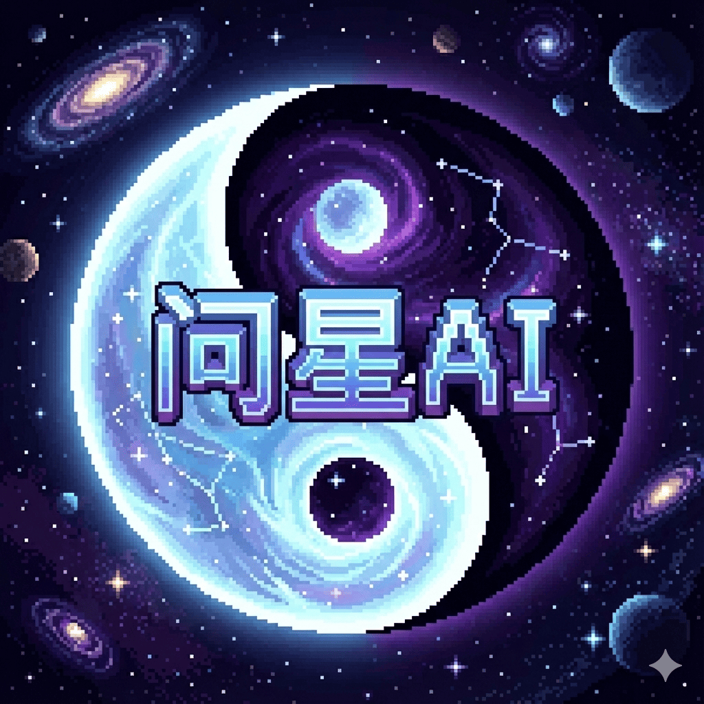

在传统命理领域，排盘复杂、解盘门槛高且主观性极强。问星AI 作为首款深度研究后融合东方传统玄学（紫微斗数、四柱八字、六爻起卦）与前沿 AI大语言模型 的智能应用，为您开启命运的全息宇宙。
由专业命理师研究后选择紫微斗数作为玄学模型底座，打破传统算命软件刻板模板化反馈的局限，深度结合 3D全息命盘图 与 人生大运K线 等创新数据架构。不仅能多维推演个体运势周期，更能像专属真人师傅一样助力您的每一次关键抉择，帮您洞察事物背后的深层发展逻辑。

由专业命理师 AIcoding 创新研发，支持紫微斗数排盘、六爻解卦、大运K线测算与合盘分析，为用户提供可验证、可对照、可解释的命理分析视角。
由专业命理师 AIcoding 打造，颠覆命理行业的玄学APP，不仅可以推导未来，还可以验证过去。
为您的人生剧本提供更专业、更理性的视角。
在传统命理领域，排盘复杂、解盘门槛高且主观性极强。问星AI 作为首款深度研究后融合东方传统玄学（紫微斗数、四柱八字、六爻起卦）与前沿 AI大语言模型 的智能应用，为您开启命运的全息宇宙。
由专业命理师研究后选择紫微斗数作为玄学模型底座，打破传统算命软件刻板模板化反馈的局限，深度结合 3D全息命盘图 与 人生大运K线 等创新数据架构。不仅能多维推演个体运势周期，更能像专属真人师傅一样助力您的每一次关键抉择，帮您洞察事物背后的深层发展逻辑。
导入双人出生信息，利用大模型算力深度剖析双方宫位共振、星曜冲合。快速评估性格契合度，精准识别命中正缘与烂桃花，为您的婚恋关系与感情发展提供客观理性的策略建议。
结合真实物理算法模拟三枚铜钱的抛掷过程，AI自动寻取动爻、变卦。针对具体诉求（事业跳槽、财运投资、寻人寻物），提供融合当下时空维度的直接吉凶断语与行动指南。
摒弃晦涩冗长的干支名词，将人生的十年大运起伏转化为直观金融K线图。复盘过往关键人生节点的得失，前瞻预警未来三年的高点与低谷，助您在人生的十字路口把握机遇。
A: 传统在线排盘网站往往只提供生硬的数据库规则匹配和长篇大论的模板。问星AI通过海量专业命理文献训练，能在3D星盘的复杂架构上进行多维度的语义空间理解并动态综合评分，输出更像是由真人大师一对一解读的个性化深度分析报告。
A: 问星APP目前底层大模型深度融汇了包括紫微斗数（含三合与飞星派）、四柱八字神煞、以及传统周易六爻易经体系，能跨系统进行流年流月综合推演。
A: 命理本身并非100%决定论，而是揭示生命轨迹“概率与信息场”的全息剧本。问星AI旨在通过科技手段“理性验证过去，客观推导未来”，消除传统人工解盘时的情绪化干扰。我们为您提供充分的数据逻辑支撑，帮助您更好地规划职业、健康与婚姻，把未来的选择权交还自己。